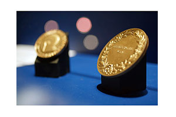

(圖片攝於士林旗艦店)
瑞康屋誕生在 2008 年春天 ， 經營團隊具有完整精品家用廚房用品、百貨零售通路的經驗， 致力將全球頂級家用鍋具、料理小家電引進台灣，並導入體驗服務完整行銷。走進廚房不再是家庭主婦的專利，舉凡現代新男人，時尚新煮婦，炙手可熱的單身貴族、銀髮族、以及小小廚師也開始向健康美食探索⋯瑞康屋旗下有 20 多位專業廚師，有完整料理教學及針對不同需求提供完整商品選擇，線上及線下教學，改變傳統料理方式，無水無油健康料理，不節省能源，快速烹調，保留食材最多營養，為地球略盡棉薄之力，讓每個家都擁有最幸福的味道。
瑞康屋代理瑞士 Kuhn Rikon 精緻鍋具，也引進瑞士 bamix 寶迷料理棒，更發展 Ucom 益康屋自有品牌，有來自德國的黑魔法、節能板及防溢提鍋都是炙手可熱的專利商品以及西非乳木果油 PureJad 璞摯保養清潔用品⋯旗下有 20 幾位廚師，保留食材營養價值，提昇美味。幸福料理，健康生活，盡在瑞康屋。
電視、廣播名主持人
十年愛用，真實呈現。出國不愛買名牌包，卻搜集了一堆鍋子。
男人愛玩車、玩音響；美人卻把玩廚房用具。認識 KUHN RIKON 從一個 44CM 大炒鍋開始，從此就愛不釋手，煉雞精的快鍋讓美人感動落淚！
HOTPAN 的神奇稀飯，讓她征服家人的胃。雙壁鍋的燉牛肉讓不敢吃牛肉的老人家從此愛上雙壁燉牛肉！
電視、廣播名主持人
懷著「10萬個為什麼」來；帶著「原來這麼輕鬆」走！
做菜真的不用搞到蓬頭垢面嗎？
做菜真的可以達到賓主盡歡嗎？
好的鍋具能夠幫你節省多少力氣呢？
好的主廚真的能夠讓你的廚藝上天堂？
隨著日曆一張一張撕去，年底的節目不勝枚舉，從感恩節、聖誕節...一路到明年，如果想著親自下廚烹煮一頓美味佳餚，陪著家人一同分享？招待同事一起同歡？或是當做派對來舉行？你的廚藝能夠應付嗎？你的廚具足以應付嗎？
在瑞康屋德櫃位上，教你如何做！更要教你如何品嚐！工欲善其事，必先利其器，想要輕鬆做料理絕對不再是難事。
「多數人熟知過去，只有少數人能夠預測未來。
多數人因為看見了才相信，只有少數人因為相信而看的見。
多數人期望從別人處得到答案，只有少數人會自己去發掘答案。
多數人遵循既有的遊戲規則，只有少數人能夠創造新的遊戲規則。」
就秉持著這樣的理念，楊平從多數的鍋具中，只有 KUHN RIKON 鍋具可以打動她的心。
在楊平的節目中，有與 KUHN RIKON 的微微蔡老師及 CC 老師一同做菜過，看到 KUHN RIKON 鍋具每一項都擁有不同的功能，總是讓楊平大開眼界。也藉由節目中一起做料理的過程，也可以推薦觀眾朋友如此好用的鍋具，是楊平樂衷的事。涼瓜煲湯的快鍋讓楊平看到一道要煮 12 小時的廣州煲湯，只需要 30 分鐘即可完成，HOTPAN 的神奇，讓她讚不絕口。
» KUHN RIKON 品牌故事
KUHN RIKON 有強力的研發與嚴選團隊，因此有足夠的能力可以開創鍋具國際市場的另一番獨特風潮，它從不抄襲，它是一個不斷改寫鍋具史的好產品。
誰說好產品就一定昂貴；
瑞康公司直接由瑞士原廠進口以實在價格的態度，問世於台灣末端市場，也準備好為消費大眾做最嚴格的把關。1819年 KUHN RIKON 創立至今已有近 200 年歷史，在瑞士是一個深具口碑的大品牌。
在瑞士，90%的瑞士家庭擁有國寶級的 KUHN RIKON 鍋具。
» KUHN RIKON 品牌歷史 (1819 至今)
在瑞士 Rykon，創辦了第一家紡織廠，同時也標誌著 Toss 河流域工業革命的來臨。
Kindlimann 兄弟將 Rykon 紡織廠變成了銅器&馬口鐵製造工廠。
早在 1900 年，就已經有了帶鳴聲與不帶鳴聲的蒸汽鍋具。
發行第一本銷售目錄，此目錄封面刊登當時全系列的鍋具商品。

Heinrich Kuhn 收購了 Kindlimann 兄弟的銅鍋與鋼鐵鍋的製造工廠。
就在產業即將蓬勃發展時 Heinrich Kuhn 過世了，事業由他 18 歲的兒子 Henri 接手。
開發出世界上第一個使用彈簧的閥門鍋具並取得專利授權，進而取代傳統重力閥門模式，讓烹飪變成靜音，不再滋滋作響。
Henri 的弟弟 Jacques 是一位受過訓練的機械工程師，他加入了公司並擔任技術部經理，在兩兄弟的經營下，公司營運蒸蒸日上。

開發了第一支 "DUROMATIC" 壓力鍋，這個產品一炮而紅，DUROMATIC 這個名字取代了所有壓力鍋，成為了壓力鍋的代名詞。這款產品也成為公司首次出口的商品。
慶祝公司成立 50 周年的同時，KUHN 第三代的 Hans-Heinrich Kuhn, 在瑞士聯邦理工學院受過訓練的工程師，正式加入了公司。
"DUROTHERM" 第一個雙璧技術的鍋具，取得了全球專利並開始在市場上推出。
"DUROTHERM" 榮獲日內瓦國際發明金獎。

"DUROTHERM" 榮獲維也納國際發明最高金獎。
Jacques Kuhn 將公司經營管理交棒給 Dr. Wolfgang-Auwater Kuhn and Hans-Heinrich Kuhn.
當年擴充 "DUROTHERM" 雙璧技術的鍋具 "MULTITHERM" 系列產品，尤其是可使用在電磁爐的鍋具。
Kuhn Rikon 成為消費品業第一間擁有 ISO 9001 認證的公司。
推出符合 CIM 標準的最先進表面處理及裝配技術。"DUROMATIC-Timax" 壓力鍋宣告廚房電子世代的來臨。
"DUROMATIC" 壓力鍋全球銷售已超過 600 萬個。
推出 "DUROMATIC Top" 裝有自動蒸汽釋放功能的壓力鍋。
瑞士著名品牌資產評估機 Advico Young & Rubicam，評價 Kuhn Rikon 為"最佳品牌"稱號。
"Heirich Kuhn Meta-llwarenfabrik" 正式更改為 "Kuhn Rikon AG"。開始使用新的品牌識別標誌。
Kuhn Rikon AG 榮獲瑞士市場營銷大獎 (Swiss Marketing Trophy)。推出了五層的 DUROPLY 系列鍋具。
DUROPLY 系列產品擴展到包括了 "PROFESSIONAL" 和 "Palen" 系列。
導入了一個全新，靈活，超現代的生產線。Kuhn RIKON 為其他品牌製造商代工生產壓力鍋。
Kuhn Rikon 聘請兩位頂級廚師作為公司一員，並開辦美食烹飪課堂。Kuhn Rikon 公司在 Rikon 地區擁有自己的香料花園，栽種 60 多種香料，其中不乏稀有品種。
HOTPAN 節能的設計在全球引起廚房烹飪的革命，而且榮獲多項國際設計大獎。
全體員工在 Titfis mountain 慶祝公司成立 80 週年紀念。董事長 Dr. Wolfgang Auwarter 建立烹飪歷史博物館。

HOTPAN 獲得德國 iF 國際論壇設計獎。我們致力於推廣健康產業並獲得 2007 年"健康與產業"頒發歐盟瑞士區推廣健康獎。
KUHN RIKON 在生產設備上投資數百萬法郎，引領技術上領導地位，並確保瑞士 Rikon 製造和"瑞士品質"的承諾。
自 Jacques Kuhn 發明 Duromatic 壓力鍋已有 60 年歷史，至今幾乎每個瑞士人的廚房都可以找到它，公司慶祝這一重要歷史時刻來臨。
發表 DUROMATIC RELAX power steamer 一個安裝在廚房裡全自動壓力鍋。透過智慧型觸控面板操作，KUHN RIKON 賦予家用廚房電器新的里程碑。
我們經營成功是永續的，我們的新產品將會繼續贏得設計大獎，像是 Good Design、紅點設計獎和 iF 設計獎。
在 2014 年 4 月Dorotee Auwärter 接管董事會的主席為代表將業主家庭和第四代。
» KUHN RIKON 專利設計
KUHN RIKON 不銹鋼快鍋於 1949 年發明，至今已上市超過 60 年，全球銷售超過百萬個，經歐盟認證，備有 TL/GS/CE 多項認證。引進台灣更通過經濟部商檢局檢測，蒸壓 1.224 kgl/cm2，更榮獲 TIME 雜誌報導，有鍋具中的 BENZ 的美稱。
在瑞士，90% 的瑞士家庭擁有國寶級的 KUHN RIKON 鍋具，有了世界性的肯定，更加強把產品介紹到世界各國，並在美國、西班牙、英國、德國設有分公司，至今有超過 600 萬個 KUHN RIKON 鍋具在全世界的家庭。
KUHN RIKON DUROMATIC，壓力鍋，經濟部標準檢驗局嚴格把關確保消費者使用安全，商品檢驗標誌，安全認證字號 R36450。
» KUHN RIKON 產品嚴格檢測
» KUHN RIKON 工廠
» 自動機械設備
» QC 嚴格品管
» 我們的產品在出廠前皆做過嚴密的試驗，試驗項目如下：
1.鍋蓋壓力測試：
KUHN RIKON 工廠，在每一次鍋蓋的生產過程中，取樣第一個和最後一個鍋蓋做測試，測試標準為在 1.5HZ頻率、2.5bar 的氣壓下做 11,500 次。
2.鍋蓋安全閥壓力測試與鍋壁抗壓性測試：
每次鍋蓋組裝，安全閥都會經過烹飪壓力測試。此試驗過程中鍋壁測試標準為在 1.5HZ 頻率、2.5bar 的氣壓下做 11,500 次。
3.最後組裝測試與矽膠圈壓力測試：
組裝完成後，矽膠圈(第3道安全排氣功能)也要通過烹飪壓力安全測試。